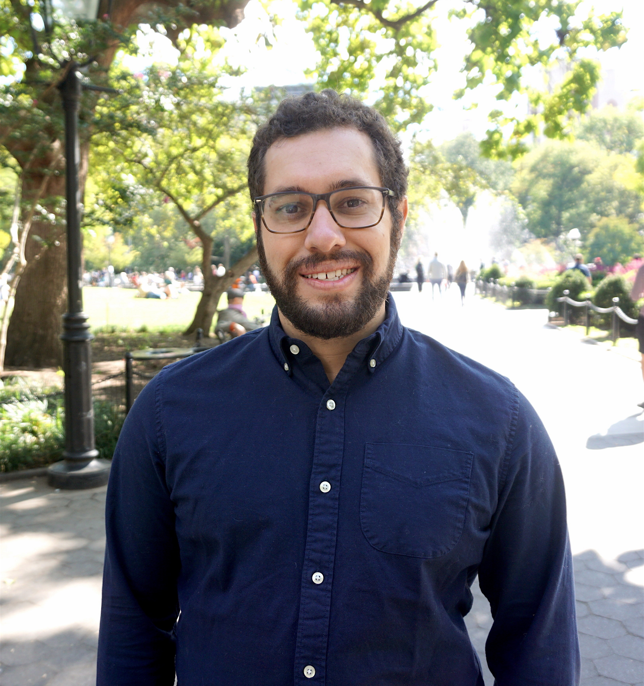

370 Jay St., Brooklyn, NY • Office 1105 • Zoom Room • cmusco [at] nyu.edu • CV • GitHub • Google Scholar

I am an Assistant Professor of Computer Science and Engineering at New York University's Tandon School of Engineering. My students and I are part of NYU's Theoretical Computer Science Group and the VIDA Center. Our research is on the design and analysis of efficient algorithms for understanding data, and combines ideas from theoretical computer science with tools from computational mathematics. We are funded by the Dept. of Energy and National Science Foundation, including by an NSF CAREER Award.
I was previously a Research Instructor at Princeton and completed my PhD at MIT, where I was fortunate to be advised by Jon Kelner. Before MIT I was an engineer at Redfin and I studied Applied Math and Computer Science at Yale. Outside of research, I am involved in organizing the annual MathWorks Math Modeling Challenge for high school students.
NYU Tandon is hiring in Computer Science at all ranks and in all areas! Please apply here!
We are holding NYU's in-person CS Theory Seminar on Thursdays. You can also sign up for the email list to receive announcements about upcoming talks.
Spring 2025: NYU CSCI-GA 3033/CS-GY 9223, Recent Developments in Algorithm Design
Fall 2019-2023, Spring 2025: NYU CS-GY 6763, Algorithmic Machine Learning & Data Science
Spring 2022, 2023, Fall 2024: NYU CS-GY 6923, Machine Learning
Spring 2020: NYU CS-UY 4563, Introduction to Machine Learning
Fall 2018: Princeton COS 521 , Advanced Algorithm Design
Apoorv Singh, Ph.D., 2020 - present.
R. Teal Witter, Ph.D., 2020 - present (with Prof. Lisa Hellerstein).
Aarshvi Gajjar, Ph.D. 2021 - present (with Prof. Chinmay Hegde).
Majid Daliri, Ph.D., 2022 - present.
Noah Amsel, Ph.D., 2022 - present (with Prof. Joan Bruna).
Feyza Duman Keles, Ph.D., 2023 - present (with Prof. Chinmay Hegde).
List of previous students and postdocs.
If you are interested in working with me on research, I would encourage you to apply to NYU Tandon's PhD program in Computer Science. If you are a current undergraduate or masters student at NYU, the best way to start a collaboration or to obtain a TA position is to first complete my algorithms class, CS-GY 6763. More information on working with my group can be found here.
Near-optimal Hierarchical Matrix Approximation from Matrix-vector Products
ACM-SIAM Symposium on Discrete Algorithms (SODA 2025).
Slides: 60 Minutes.
Faster Linear Systems and Matrix Norm Approximation via Multi-level Sketched Preconditioning ACM-SIAM Symposium on Discrete Algorithms (SODA 2025).
Improved Spectral Density Estimation via Explicit and Implicit Deflation ACM-SIAM Symposium on Discrete Algorithms (SODA 2025).Navigable Graphs for High-Dimensional Nearest Neighbor Search: Constructions and Limits Advances in Neural Information Processing Systems (NeurIPS 2024).
Near-Optimal Approximation of Matrix Functions by the Lanczos Method Advances in Neural Information Processing Systems (NeurIPS 2024). Invited for spotlight presentation. Slides: 60 Minutes.
Benchmarking Estimators for Natural Experiments: A Novel Dataset and a Doubly Robust Algorithm Advances in Neural Information Processing Systems, Datasets and Benchmarks Track (NeurIPS 2024).Sharper Bounds for Chebyshev Moment Matching with Applications to Differential Privacy and Beyond Preprint.
Coupling without Communication and Drafter-Invariant Speculative Decoding Preprint.
Faster Spectral Density Estimation and Sparsification in the Nuclear Norm Conference on Learning Theory (COLT 2024).
Agnostic Active Learning of Single Index Models with Linear Sample Complexity Conference on Learning Theory (COLT 2024). Preliminary version at NeurIPS 2023 Workshop on Adaptive Experimental Design and Active Learning in the Real World.
Sampling Methods for Inner Product Sketching
Proceedings of the VLDB Endowment (VLDB 2024).
Slides: 60 Minutes.
Fixed-Sparsity Matrix Approximation from Matrix-Vector Products Preprint.
Improved Active Learning via Dependent Leverage Score Sampling International Conference on Learning Representations (ICLR 2024). Invited for oral presentation.
A Simple and Practical Method for Reducing the Disparate Impact of Differential Privacy AAAI Conference on Artificial Intelligence (AAAI 2024).
Algorithm-agnostic Low-rank Approximation of Operator Monotone Matrix Functions SIAM Journal on Matrix Analysis and Applications (SIMAX 2024).
On the Unreasonable Effectiveness of Single Vector Krylov Methods for Low-Rank Approximation ACM-SIAM Symposium on Discrete Algorithms (SODA 2024). Slides: 30 Minutes. Raphael's Julia Code.
Simple Analysis of Priority Sampling SIAM Symposium on Simplicity in Algorithms (SOSA 2024).
Structured Semidefinite Programming for Recovering Structured Preconditioners Advances in Neural Information Processing Systems (NeurIPS 2023).
Moments, Random Walks, and Limits for Spectrum Approximation Conference on Learning Theory (COLT 2023).
Efficient Block Approximate Matrix Multiplication European Symposium on Algorithms (ESA 2023).
Dimensionality Reduction for General KDE Mode Finding International Conference on Machine Learning (ICML 2023).
Weighted Minwise Hashing Beats Linear Sketching for Inner Product Estimation ACM Symposium on Principles of Database Systems (PODS 2023).
Low-memory Krylov subspace methods for optimal rational matrix function approximation
SIAM Journal on Matrix Analysis and Applications (SIMAX 2023).
Tyler's Python Code.
Active Learning for Single Neuron Models with Lipschitz Non-Linearities
International Conference on Artificial Intelligence and Statistics (AISTATS 2023).
Preliminary version at NeurIPS 2022 Workshop on The Symbiosis of Deep Learning and Differential Equations II.
Near-Linear Sample Complexity for Lp Polynomial Regression ACM-SIAM Symposium on Discrete Algorithms (SODA 2023).
A Tight Analysis of Hutchinson's Diagonal Estimator SIAM Symposium on Simplicity in Algorithms (SOSA 2023).
Active Linear Regression for lp Norms and Beyond IEEE Symposium on Foundations of Computer Science (FOCS 2022).
How to Quantify Polarization in Models of Opinion Dynamics International Workshop on Mining and Learning with Graphs (workshop at KDD 2022).
Chemically-informed data-driven optimization (ChIDDO): Leveraging physical models and Bayesian learning to accelerate chemical research Reaction Chemistry & Engineering 2022.
Streaming Approach to In Situ Selection of Key Time Steps for Time-Varying Volume Data IEEE/Eurographics EuroVis 2022.
Sublinear Time Spectral Density Estimation ACM Symposium on Theory of Computing (STOC 2022). Slides: 50 Minutes.
A Sketch-based Index for Correlated Dataset Search International Conference on Data Engineering (ICDE 2022).
Fast Regression for Structured Inputs International Conference on Learning Representations (ICLR 2022).
Error bounds for Lanczos-based Matrix Function Approximation SIAM Journal on Matrix Analysis and Applications (SIMAX 2022).
Dynamic Trace Estimation Advances in Neural Information Processing Systems (NeurIPS 2021).
Finding an Approximate Mode of a Kernel Density Estimate European Symposium on Algorithms (ESA 2021).
Correlation Sketches for Approximate Join-Correlation Queries ACM Special Interest Group on Management of Data Conference. (SIGMOD 2021).
Public Transport Planning: When Transit Network Connectivity Meets Commuting Demand ACM Special Interest Group on Management of Data Conference. (SIGMOD 2021).
Graph Learning for Inverse Landscape Genetics AAAI Conference on Artificial Intelligence (AAAI 2021). Preliminary version in NeurIPS 2020 AI for Earth Sciences workshop.
Simple Heuristics Yield Provable Algorithms for Masked Low Rank Approximation Innovations in Theoretical Computer Science (ITCS 2021).
Hutch++: Optimal Stochastic Trace Estimation SIAM Symposium on Simplicity in Algorithms (SOSA 2021). Slides: 50 Minutes. MATLAB Code.
The Statistical Cost of Robust Kernel Hyperparameter Turning Advances in Neural Information Processing Systems (NeurIPS 2020).
Fourier Sparse Leverage Scores and Approximate Kernel Learning Advances in Neural Information Processing Systems (NeurIPS 2020). Invited for spotlight presentation.
Near Optimal Linear Algebra in the Online and Sliding Window Models IEEE Symposium on Foundations of Computer Science (FOCS 2020).
Low-Rank Toeplitz Matrix Estimation via Random Ultra-Sparse Rulers IEEE International Conference on Acoustics, Speech, and Signal Processing (ICASSP 2020).
Sample Efficient Toeplitz Covariance Estimation ACM-SIAM Symposium on Discrete Algorithms (SODA 2020). Slides: 50 Minutes.
Fast and Space Efficient Spectral Sparsification in Dynamic Streams ACM-SIAM Symposium on Discrete Algorithms (SODA 2020).
Analyzing the Impact of Filter Bubbles on Social Network Polarization ACM International Web Search and Data Mining Conference (WSDM 2020). Preliminary version in KDD 2019 workshop.
A Universal Sampling Method for Reconstructing Signals with Simple Fourier Transforms ACM Symposium on Theory of Computing (STOC 2019). Slides: 60 Minutes. Video: 30 Minutes.
Inferring networks from random walk-based node similarities Advances in Neural Information Processing Systems (NeurIPS 2018). MATLAB Code.
Eigenvector Computation and Community Detection in Asynchronous Gossip Models International Colloquium on Automata, Languages, and Programming (ICALP 2018).
Minimizing Polarization and Disagreement in Social Networks The Web Conference (WWW 2018). MATLAB Code, requires CVX library for convex optimization.
Stability of the Lanczos Method for Matrix Function Approximation ACM-SIAM Symposium on Discrete Algorithms (SODA 2018). Slides: 60 Minutes. Sample code for the version of Lanczos analyzed: lanczos.m
Recursive Sampling for the Nyström Method Advances in Neural Information Processing Systems (NeurIPS 2017). Poster. MATLAB Code, including accelerated version of the algorithm.
Random Fourier Features for Kernel Ridge Regression: Approximation Bounds and Statistical Guarantees International Conference on Machine Learning (ICML 2017). Slides: 60 Minutes. Video: 80 minutes
Input Sparsity Time Low-Rank Approximation via Ridge Leverage Score Sampling ACM-SIAM Symposium on Discrete Algorithms (SODA 2017). Slides: 60 Minutes.
Determining Tournament Payout Structures for Daily Fantasy Sports SIAM Algorithm Engineering and Experiments (ALENEX 2017). Invited to special issue of ACM Journal of Experimental Algorithmics for ALENEX. Slides: 20 Minutes.
Principal Component Projection Without Principal Component Analysis International Conference on Machine Learning (ICML 2016). Slides: 15 Minutes. MATLAB Code for standard algorithm and faster Krylov method analyzed in our recent paper.
Randomized Block Krylov Methods for Stronger and Faster Approximate Singular Value Decomposition Advances in Neural Information Processing Systems (NeurIPS 2015). Invited for full oral presentation. Slides: 20 Minutes. MATLAB Code.
Dimensionality Reduction for k-Means Clustering and Low-Rank Approximation
ACM Symposium on Theory of Computing (STOC 2015).
Slides: 60 Minutes.
We posted a note titled Projection-Cost-Preserving Sketches: Proof Strategies and Constructions which presents simplified proofs of the results in this paper and our 2017 work.
Principled Sampling for Anomaly Detection Network and Distributed System Security Symposium (NDSS 2015). Slides: 20 Minutes.
Uniform Sampling for Matrix Approximation Innovations in Theoretical Computer Science (ITCS 2015).
Single Pass Spectral Sparsification in Dynamic Streams IEEE Symposium on Foundations of Computer Science (FOCS 2014). Invited to special issue of SIAM Journal on Computing for FOCS, appeared 2017. Slides: 60 Minutes.
Prototype code for some of the algorithms I work on is available through my GitHub page. Let me know if you have any questions about these implementations.
Tyler Chen, Courant Instructor, 2022 - 2024 (next stop: Applied Research Lead, JP Morgan).
Raphael A. Meyer, Ph.D., 2019 - 2024 (next stop: postdoc at Caltech).
Akash Rao, M.S., 2023 - 2024 (next stop: Ph.D. student at WSU).
David Persson, Visiting Research Scholar, 2023 (next stop: Courant Instructor at NYU).
Atsushi Shimizu, M.S., 2022 - 2023 (next stop: Daiwa Securities Group).
Danrong Li, M.S., 2022 - 2023 (next stop: Ph.D. student at Penn State).
Xinyu Luo, M.S., 2020 - 2022 (next stop: Ph.D. student at Purdue).
Aline Bessa, Postdoc, 2021 (next stop: KNIME).
Indu Ramesh, M.S., 2020 - 2021 (next stop: Ph.D. student at NYU).
Mengxi Wu, M.S., 2020 - 2021 (next stop: Ph.D. student at USC).
Prathamesh Dharangutte, M.S., 2019 - 2021 (next stop: Ph.D. student at Rutgers).